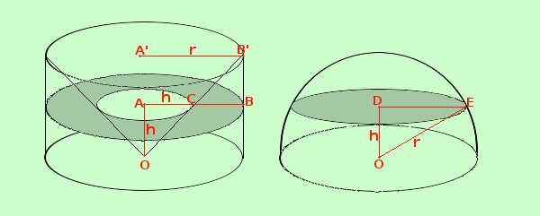

Equivalenza anticlessidra-sfera

Mostriamo ora che vale sempre il teorema:
Se prendo una semisfera ed un' anticlessidra di altezza pari al raggio r della semisfera giacenti sullo stesso piano e le taglio con un piano parallelo alla base hanno sempre la stessa area.
In parole povere se taglio due fette tipo mortadella allora le due fette hanno la stessa area
Per mostrarlo bastera' calcolare le due aree per un generico piano ad altezza h
- Area della sezione di anticlessidra
si tratta di una corona circolare di raggio maggiore r e raggio minore h (uguale all'altezza) quindi bastera' fare la differenza fra il cerchio maggiore ed il cerchio minore
Area corona circolare = Area cerchio maggiore - Area cerchio minore =
= π r2 - π h2 = π (r2 - h2)
- Area della sezione della semisfera
si tratta di un cerchio di raggio il segmento DE
Quindi
Area = π DE2
_
Devo trovare il valore di DE2
_
; so che
OD = h
_
, OE = r
_
Posso calcolarne il valore applicando il teorema di Pitagora al triangolo ODE
AD2
_
+ DE2
_
= OE2
_
DE2
_
= OE2
_
- DO2
_
= r2 - h2
in definitiva ottengo
Area = π DE2
_
= π ( r2 - h2)
che e' identico al valore trovato per la corona circolare
Come volevamo
|